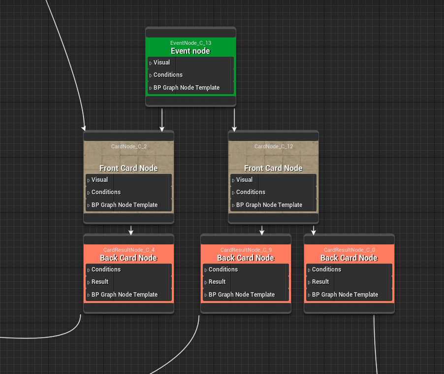
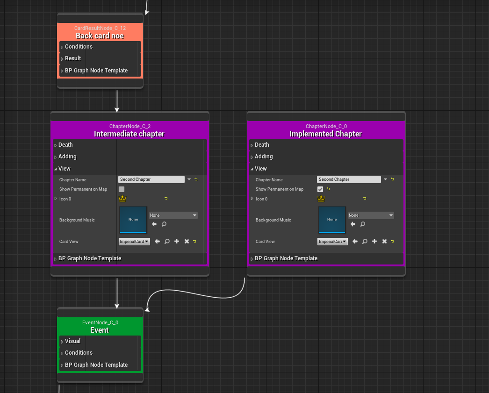
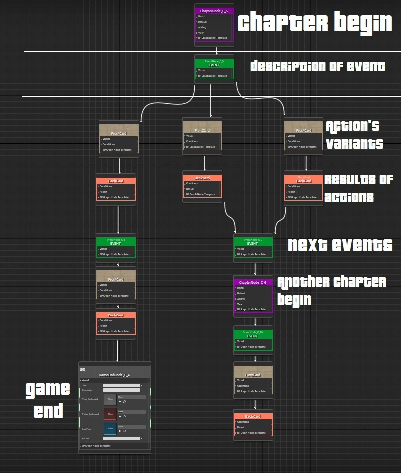

Портфолио
|
Приветствую! |
Предпочтения |
|
Чаще всего, для разработчика игр важно, обладать богатым опытом и познанием в играх. |
Образование |
|
Оператор электронно-вычислительных и вычислительных машин, Мастер по обработке цифровой информации |
|
Шатурский Энергетический Техникум с 2013 по 2017 |
Опыт работы |
Период |
|
Middle Gamedev Developer, MASD (удаленно)
Проект:
Шутер жанра королевская битва в сеттинге пост-апокалипсиса и киберпанка, с
интеграцией блокчейн технологий. Платформа – ПК
Планирование и построение базовой архитектуры проекта
Команда: Всего в разработке проекта занято 10 чел., из которых 2 Middle Unreal Engine Developer
Достижения:
Мои компетенции в Unreal Engine:
|
Январь 2022 - Июль 2022 |
|
|
Мои работы |
|
Симулятор бога лучной стрельбы с элементами охоты и выживания. |
|
Мультиплеерный шутер от первого лица с механиками королевской битвы и интеграцией блокчейн технологий. |
|
РПГ в сеттинге средневековья с ориентированной системой боя (проект на данный момент заморожен) |
|
С помощью этой системы можно сделать обследование ран и их лечение. Например, вы можете сделать захват застрявших стрел или пуль из своего тела.
|
|
Card Quest System
- это актив, на основе которого можно разрабатывать карточные квесты, сторитэил и т.п. без особого труда и без знания языков программирования!
Как начать писать историю?
Глава Корневой главы является обязательной! 
Тем не менее, вы также можете рассказать историю, не прибегая к картам выбора.

У вас также есть возможность разнообразить свою историю мини-играми.
Примеры таких игр также можно найти внутри ассета, в него входят три мини-игры. Два для взлома замка разными способами. Одно заклинание уничтожения мини-игры. Чтобы разрушить заклинания, вы должны сделать большой круг синим, а маленькие черными. Цвета и конечные положения кругов генерируются случайным образом. И две системы подбора замков. Чтобы открыть левый замок (lockpick), нужно правильно расположить отмычку, переместив мышь вдоль оси X и повернув замочную скважину вдоль оси Y. Чтобы выбрать правильный замок (AlterLockPick), отвертка и отмычка должны быть расположены правильно. Функции
Пример построения графа:

|
|
Старое видео из моей работы над личным проектом Trashheim. Здесь я показываю ориентированную боевую систему, в которой вы контролируете направление удара на протяжении всего замаха. |